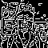

,

Google Schoolar| CV | Linkedin| Github |YouTube |Bilibili
👋 Biography
I am a tenure-track Assistant Professor at the Department of Computer Science at Knox College. I received my Ph.D. in Electrical and Computer Engineering in 2025 and my B.S. in Computer Science at The University of Alabama. My advisor was Dr. Fei Hu from The University of Alabama and my co-advisor is Dr. Yu Gan from Stevens Institute of Technology.
My research lies at the intersection of Artificial Intelligence, Computer Vision, and Extended Reality (XR).
Currently working on:
- Video anomaly reasoning with vision-language models
- Neural rendering on XR devices
📌 News
2026
- 2026 — Serving as a reviewer for IEEE Transactions on Systems, Man and Cybernetics: Systems, and Medical Image Analysis.
- 2026 — Our paper ”Deep Learning-based Spatio-temporal Framework for Opioid Overdose Monitoring in Rural Alabama” has been published in Artificial Intelligence in Health.
- 2026 — Our book ”Metaverse Platform Implementation: AI, Security, and Applications” has been published by CRC Press. (co-editor)
- 2026 — Two book chapters published in Metaverse Platform Implementation: ”Virtual Reality Medical Technology in the Metaverse: A Digital Twin Approach and Cybersecurity Considerations” and ”Neural Rendering Technology in VR and AR.”
2025
- 2025 — Serving as a reviewer for IEEE International Symposium on Mixed and Augmented Reality (ISMAR) 2025.
- 2025/9 — Joined Knox College as Tenure-Track Assistant Professor in the Department of Computer Science.
- 2025/7/29 — Our patent “Simulating a Split-Belt with a Single-Belt Treadmill” has been filed by the University of Texas System and the University of Alabama.
- 2025/5 — Received Ph.D. in Electrical and Computer Engineering from The University of Alabama.
- 2025 — Our paper ”Real-Time, Free-Viewpoint Holographic Patient Rendering for Telerehabilitation via a Single Camera: A Data-driven Approach with 3D Gaussian Splatting for Real-World Adaptation” has been published in IEEE Transactions on Visualization and Computer Graphics.
- 2025 — Book chapter ”High-Bandwidth Communication Technologies for the Metaverse” published in Metaverse Platform Implementation, CRC Press.
2024
- 2024/11/8 — Our paper ”StructuGraphRAG: Structured Document-Informed Knowledge Graphs for Retrieval-Augmented Generation” has been published in the Proceedings of the AAAI Symposium Series.
- 2024/6/1 — Our paper ”Reconstructing Human Gaze Behavior from EEG Using Inverse Reinforcement Learning” has been published in the Smart Health Journal.
2023
- 2023/11/21 — Our paper ”Single-Belt Versus Split-Belt: Intelligent Treadmill Control via Microphase Gait Capture for Poststroke Rehabilitation” has been published in IEEE Transactions on Human-Machine Systems.
- 2023/2/9 — Our patent ”Real-Time, Fine-Resolution Human Intra-Gait Pattern Recognition Based on Deep Learning Models” has been filed by the University of Alabama.
2022
- 2022 — Our paper ”Let Every Voice Be Heard: Developing a Cost-effective Community Sampling Frame in Rural Alabama to Combat COVID-19” has been presented at IEEE/ACM CHASE 2022.
- 2022/5/20 — Our paper ”Multi-Scale Reconstruction of Undersampled Spectral-Spatial OCT Data for Coronary Imaging Using Deep Learning” has been published in IEEE Transactions on Biomedical Engineering.
2021
- 2021/2/2 — Our paper ”Inpainting for Saturation Artifacts in Optical Coherence Tomography Using Dictionary-Based Sparse Representation” has been published in the IEEE Photonics Journal.
2020
- 2020/7/20 — Our paper ”Super-Resolution Technology to Simultaneously Improve Optical & Digital Resolution of Optical Coherence Tomography via Deep Learning” has been published in the 42nd Annual International Conference of the IEEE Engineering in Medicine & Biology Society (EMBC).
- 2020/1/15 — Our paper ”Rapid Escherichia coli Trapping and Retrieval from Bodily Fluids via a Three-Dimensional Bead-Stacked Nanodevice” has been published in ACS Applied Materials & Interfaces.